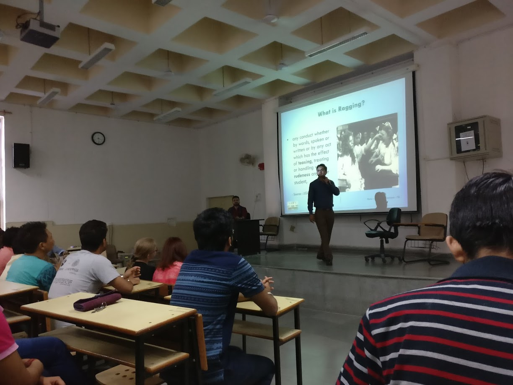

<div id="single-portfolio">
	<div id="portfolio-details" class="container">
		<a class="close-folio-item" href="#"><i class="fa fa-times"></i></a>
		
		<div class="row">
			<div class="col-sm-9">
				<div class="project-info">
					<h3>A motivational talk by Apurva Sharma</h3>
					<p>Every soul that wanders, lusts for life. Technological innovations and digitization has surely fazed away the barrier for communication, but ironically reality differs. This reality has drenched the life out of students and end result reflects in loss of motivation. Keeping this in mind Counselling Cell IIT Roorkee was very pleased to have hosted Ms. Apoorva Sharma, the Co-founder and CEO of Plexus Venture. Plexus Venture (http://www.plexusventure.com) is an analytics firm specializing in big data and machine learning. This event witnessed a huge footfall spanning across various department. The highly inspiring talk that she delivered focused on how to get a better control over our lives, and maximizing the productivity of our everyday life. The speaker talked about her experience as an entrepreneur, the roadblocks that she had to face and what kept her going to make her dream a reality. She inspired her through her anecdotes. The intention behind organizing this talk was that everyone take something meaningful out of this talk, which could help them achieve what they believe they should achieve.</p>
									
</div>
			</div>
			<div class="col-sm-3">
				<div class="project-details">
					<h3>HIGHLIGHTS</h3>
					<p><span>Speaker: </span> Apurva Sharma</p>
					<p><span>Date:</span>   February 1st, 2018</p>
					<p><span>Venue:</span> LHC 002</p>
				</div>  
			</div>
		</div>
	</div>
</div>